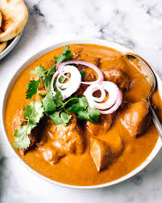

Butter Chicken

Procedure :
- Step 1:First, mix
your yogurt marinade together.
- Step 2:Marinate chicken
for 20 minutes, or overnight if time allows.
(The longer it marinates,
the more tender your chicken will be.)
- Step 3:Sear chicken
in a skillet or pan. Keep those charred
bits on the pan to make your sauce.
Browned bits = flavour. If you have
too many burnt pieces stuck to the pan,
you can discard some of them if you wish.
- Step 4: Finally,
make your curry sauce in the same skillet.
Ingredients :
- 28 oz (800g) boneless and skinless chicken
thighs or breasts cut into bite-sized pieces
- 1/2 cup plain yogurt
- 1 1/2 tablespoons minced garlic
- 1 tablespoon minced ginger (or finely grated)
- 2 teaspoons garam masala
- 1 teaspoon turmeric
- 1 teaspoon ground cumin
- 1 teaspoon red chili powder
- 1 teaspoon of salt